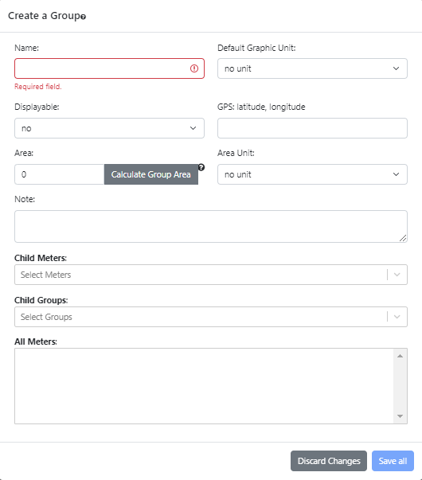
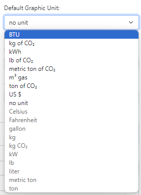
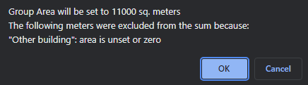
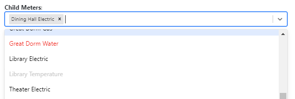

OED Documentation
Group Creating
Version V1.0.0
Documentation overview
Admin documentation
Information
Site Management
Data Acquisition
Site Installation
User documentation
Documentation versions for this page
These features are only available to select people who oversee the OED site (called admins) so this information is not usually of interest to a general user.
Overview
The admin group creating popup, shown in the following figure, allows admin users to create a new group on an OED site. It is accessed from the admin group viewing page by clicking the "Create a Group" button near the top of that page. 
All example information shown on this web page is based upon the documentation example.
Usage
As shown in the figure above, the following information can be entered:
- Name. This is the name of the group. The name of a group must be different from any other group. Though not required it is a good idea to give a group a different name from any meter identifier because it can be difficult to tell them apart in a graphic if they are the same. This field will be outlined in red until a name is input as is shown in the figure.
- Default Graphic Unit. This dropdown menu allows for the selection a compatible graphing unit that is used if one is not already selected before this group is chosen. It allows a site to automatically display a group in its preferred graphic unit. A default graphic unit is compatible with the group if a conversion exists between all meters in this group and the unit. The compatible/selectable units will be at the top of the dropdown menu and the incompatible/non-selectable ones will be at the bottom in grayed out font. Initially this menu will only have "no unit" as compatible because that is the only compatible unit with an empty group as shown in the following figure.
The dropdown menu when the meter "Dining Hall Electric" that collects in kWh is the only child meter is shown in the following figure. All units from Celsius and below are not compatible and grayed out. 
If "no unit" is selected then this group cannot be graphed until a compatible unit is already selected. It has a default value of "no unit".
- Displayable. This dropdown menu can be "yes" or "no" (default). "yes" indicates the group can be seen and graphed by any user and "no" limits the group visibility and graphing to admins.
- GPS. This is the GPS location of the group entered as latitude, longitude (without parentheses). It is used when the values from the group are placed on a map graphic. More information on using the best GPS value is given on the admin documentation page for creating maps. If blank then there is no GPS value and the group cannot be placed on a map.
- Area. A non-negative number of the area associated with the group. It is used when normalizing graphics by area. It has a default value of zero that means this group cannot be normalized by area. The default value will be used if the input is left blank. This field will be outlined in red until valid value (including blank) is entered if an invalid value is entered.
- Calculate Group Area. Knowing the total area that all meters in a group represents can be complex.To help with this, OED can automatically calculate the area of the group from all the included meters (not just the directly included ones). The group must have an "Area Unit" (not "no unit" ) to be able to do this and a popup will say "No group area unit" if there is no area unit set. Note that the underlying meters can be in any area unit but OED can still calculate the value in the unit requested. Clicking this button will cause OED to calculate this area and it will then display the resulting value. For example, if the group contains "Dining Hall Electric", "Great Dorm 1st Floor Electric" And "Great Dorm 2nd Floor Electric" then clicking this button will result in the popup in the next figure.
If one clicks "OK" (the default) then the value for area display will be placed in the area input and it will overwrite any existing value. If one clicks "Cancel" then nothing is changed. In this example the area is 11000 because the area of "Dining Hall Electric" is 1000, "Great Dorm 1st Floor Electric" is 5000 and "Great Dorm 2nd Floor Electric" is 5000 so the sum is 11000.
It is not required that all meters have an associated area. If a group includes such a meter then OED will give a warning when it calculates the area of the group because it cannot include anything for that meter. If the previous example was modified to include a fourth meter of "Other building" that does not have an area then the popup in the next figure would appear when you calculate the area. 
As stated, the area calculated does not include anything for this meter. Note if one clicks "OK" and sets the area for this group, it is possible to manually edit this value to include any missing meters. While this example shows one meter, any meters without an area will be listed in the popup.
- Area Unit. This dropdown menu can have the values shown in the following figure. The usable area units are "sq. feet" and "sq. meters". If "no unit" is selected then the field will be red if the area is non-zero because OED needs to know the unit of the area. The default value is "no unit" and this can be used if the area is reset back to zero so the choice is valid.
- Note. This may give additional information about the group supplied by the admin. Any text can be entered and it can be blank if desired.
- Child Meters. This area lists all the meters directly included into this group along with the ability to change them. A meter can be removed by clicking the "x" to the right of its name. The dropdown menu can be used to select another meter to include into this group. A meter is compatible with the group if a conversion exists between all meters in this group and the meter. Unlike many dropdown menus in OED, all the possible meters are listed alphabetically because there are several possible states for any meter. In the following figure, an example is shown where the "Dining Hall Electric" meter is already a member of this group and the default graphic unit is "no unit". This meter collects in kWh (energy unit) and is compatible with energy, CO2 units and US $. The meters shown are displayed as follows (there are more meters in the dropdown menu that are not shown):
- Adding this meter to the group will not change the group's possible compatible units. Such meters are shown in regular font and are selectable. In the following figure, "Library Electric" and "Theater Electric" are displayed this way because they are all collecting in an energy unit (kWh) and are completely compatible with each other.
- Adding this meter to the group will change the group's possible compatible units but the reduced compatible units still include the current default graphic unit. Such meters are shown in orange font and are selectable. In the following figure, "Great Dorm Water" is displayed this way and is compatible with volume units, CO2 units and US $. This group and the already selected meter are both compatible with CO2 units and US $ so energy units will no longer be compatible. Selecting this meter is compatible with the default graphic unit because it is currently "no unit".
- Adding this meter to the group will change the group's possible compatible units so there are no compatible units. If OED allowed such a group then it could never be graphed so it is not allowed. Thus, the incompatible/non-selectable meters will be in grayed out font. In the following figure, "Library Temperature" is displayed this way because it is collecting in a temperature unit (Fahrenheit) and is not compatible only with temperature units. These are not compatible with any of the "Dining Hall Electric" meter units so there are no possible compatible units between them.
The fourth possible display state of a meter is shown in the following figure. In this case the default graphic unit was changed to kWh. As a result, the meter "Great Dorm Water" is now in red. This indicates that the compatible units would change if this meter is selected and the current default graphic unit is not one of the changed compatible units (CO2 units and US $). If this meter is chosen then the default graphic unit must be changed. OED will set the default graph unit to "no unit" and one needs to set it to a new compatible unit for this group if desired. These meters are shown in red to indicate that the group will automatically be changed. If the new meter is added to the group then a pop up will confirm the change to the group. In this example it would have "The default graphic unit was changed to no unit from "kWh"". 
While the examples above use meters, any group included in this group also impacts the compatible units. Any of the meters that are in this group (see All Meters below) are included in the consideration of compatible units. Finally, a meter can always be removed from a group because it cannot reduce the compatible units so it will leave it the same or add more compatible units.
- Child Groups. This area lists all the groups directly included into this group along with the ability to change them. A group can be removed by clicking the "x" to the right of its name. The dropdown menu can be used to select another group to include into this group. A group is compatible with the new group if a conversion exists between all meters in this group and all meters in the new group. Thus, the dropdown menu to select a new group has the same choices as the "Child Meters" dropdown menu and they represent the same thing. Because groups can contain multiple meters, it can be more difficult for one to determine the compatibility of groups but OED will do this automatically. The next figure shows what the group dropdown menu looks like from the first example in the Child Meters where the default graphic unit is "no unit". There are more groups below the ones shown. The reason for the group labeling can be determined by looking at the information in the documentation example and compatibility .
- All Meters. Determining all meters that are included in a group can be difficult, especially given that groups can include groups (and those can include more groups). To help with this, this area shows all meters that are included in this group from all directly included meters and groups. The following figure shows the result for all meters for the meters and groups shown that will be included in this group. The reason for these meters can be determined by looking at the information in the documentation example.
There are two buttons at the bottom of the popup:
- Discard changes. Clicking this button will remove all entries and close the popup. This means the next time that "Create a Group" is clicked all the values will be the default ones. Clicking outside the popup but within the OED web browser window will have the same effect.
- Save all. Clicking this button will save the new group with the provided entries.
Details
None